Patisserie Minimal
町の人にも、働く人にも“この町にMinimalが来たこと”が喜びや誇りであってほしい。
そんな思いで「商店街に新しくたったマンションの１階がちょうどいい大きさだったから、パティシエが機材を持ち込み真摯にものづくりに励むアトリエ」というコンセプトで計画した。そのため内装は新築RCテナントの伽藍堂から更新せず、家具や什器で空間の表現をしている。
パティスリーのインテリアデザインを再考する
住宅街の生活の中心となっている商店街に高価格帯のスイーツを提供するチョコレートブランドが初のパティスリー業態をオープンする。
パティスリーと言えば、フランスをはじめとしたヨーロッパの文脈を汲んだデザインだとオーセンティックな印象になるし、もっとトレンドを抑えた”今”らしいデザインもフィットする。だけど、創業10年を迎えるMinimalというブランドの状況を考えるとカルチャーに振るには属人性の質を上げづらく、オーセンティックな路線だと既存のブランディングとの乖離や、建物の立地や大きさを考慮すると商店街と悪い不調和が生まれそうな気がした。そこで大事にしたいクラフト感を表現しつつ、新しい業態への挑戦のステージとしてインテリア（床・壁・天井）やファサードに装飾的な意匠はせずに、なるべく既存のまま最小限の仕上げを施した。その反面、家具や什器はオーセンティックなパティスリーをオマージュしたディテールとしている。質素な空間にこだわりある物を持ち込んだようなデザインで、庶民的な商店街に馴染みながらも、ブランドの個性を表現している。
店内はアトリエの一角に設けた来客スペースという位置付けで、工房からひと続きの空間となっており、カウンター席の天板はさじ面が連続する木とテラゾーが切り替わるデザインにして、さながら工房を前のめりに覗き見るかのように工房を眺めながらデセールを楽しむことができる。
街のコミュニケーションをとるパティスリーの顔
クラフトマンシップを大事にしている店舗の顔は、もちろん手仕事により作られる商品でありたい。そのためショーケースが見やすいように、店舗エントランスを室内に入り込ませてショーケースと並行に設けた。ガラス面以外はパンチングメタルとし内外相互に視認でき繋がりある印象をつくることで、町の人と働く人の間の精神的な距離を縮めたいと考えた。昼と夜で印象を変えるパンチングメタルのファサードは、町の表情を豊かにし、夜になると漏れる光が商店街を照らしている。
そんなファサードの前に植栽とモザイクタイルのベンチで緑色の一角をつくっている。ここは商店街の風景の一部として心地よい景観を保ちながら、店舗専用の外部スペースを確保している。
設計：a.d.p
施工：a.d.p
所在地：東京都
設計：2023年1月
工事：2023年6月
竣工：2023年9月
写真：Koji Fujii / TOREAL

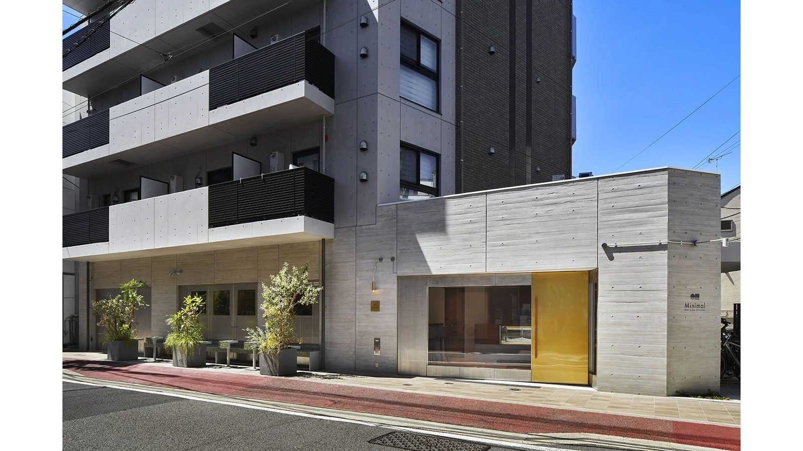
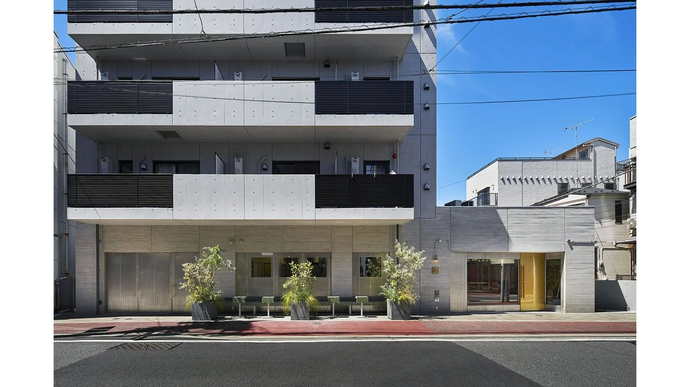
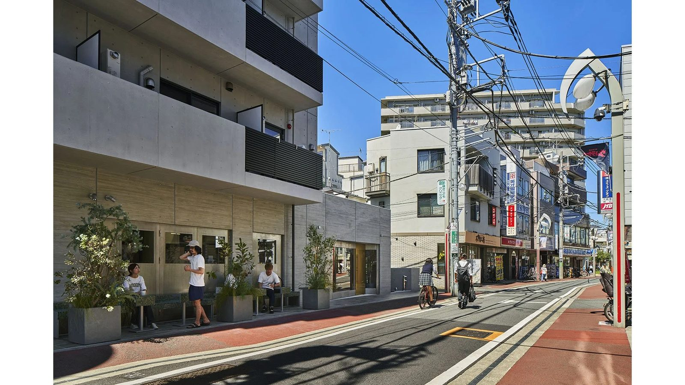
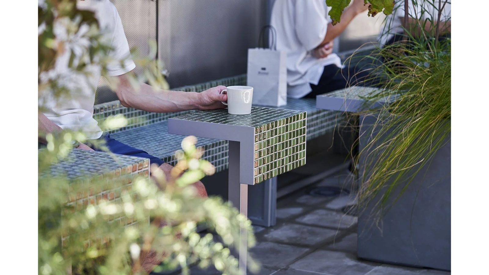
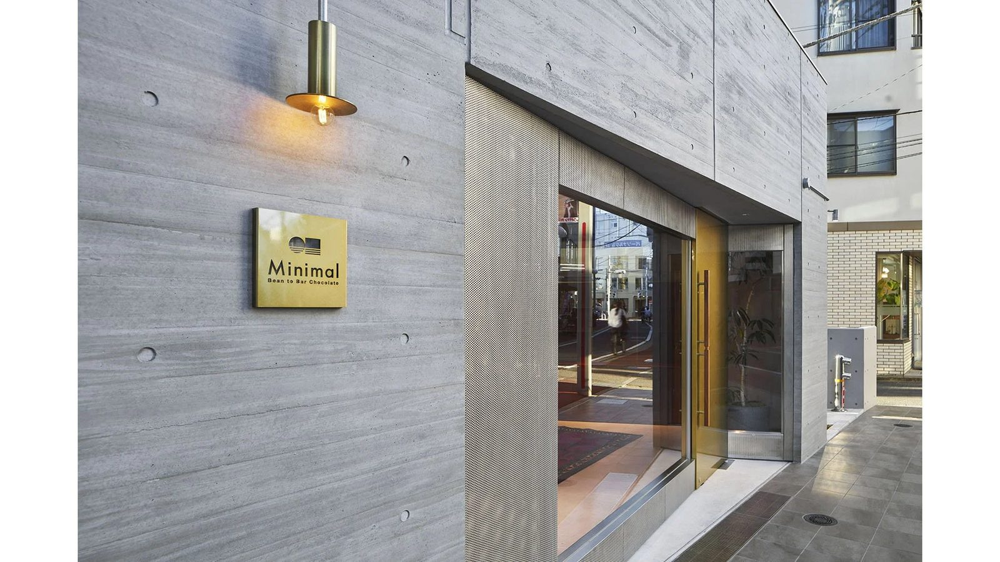
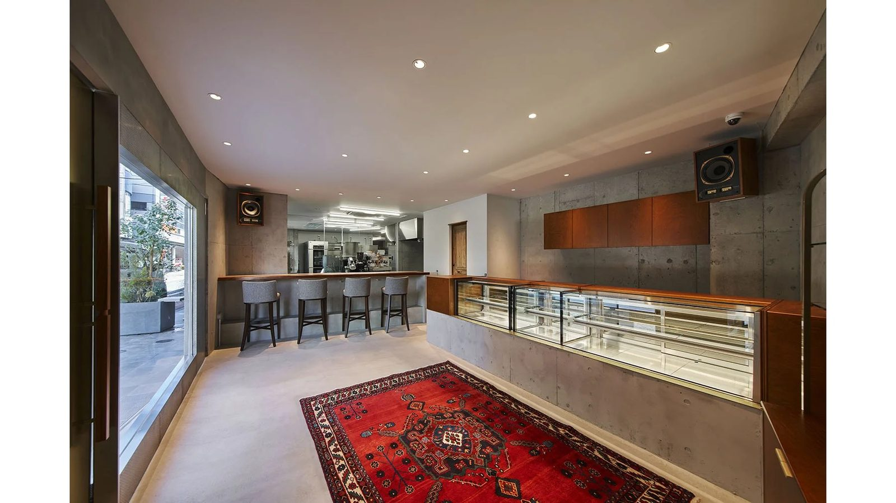
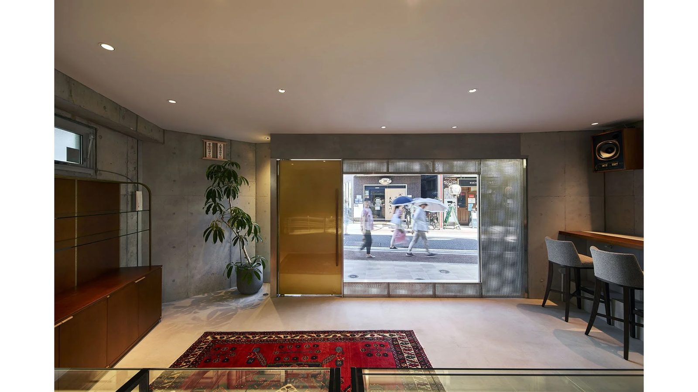
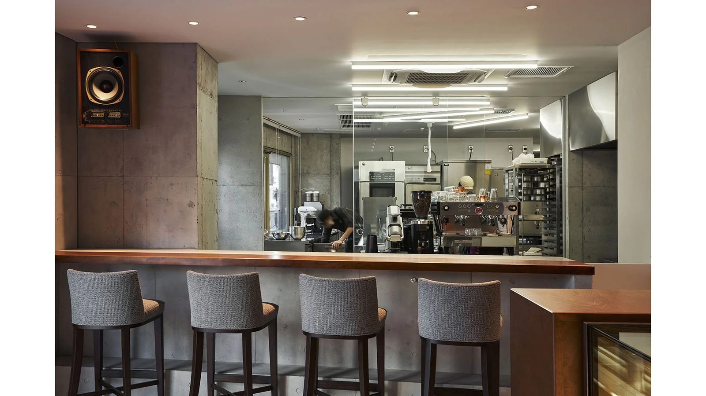
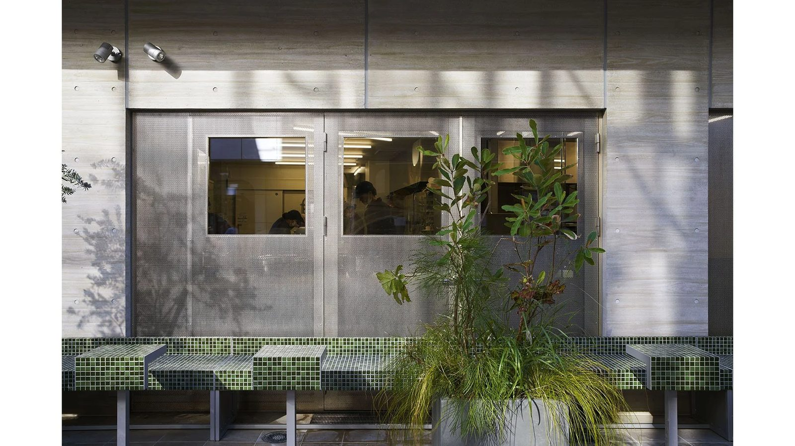
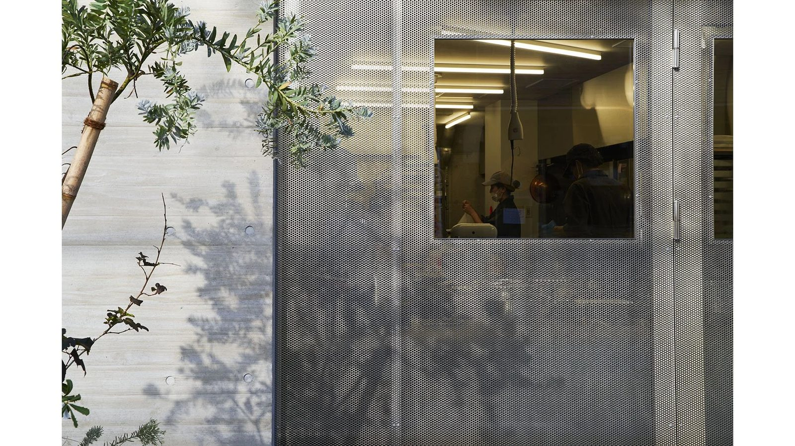
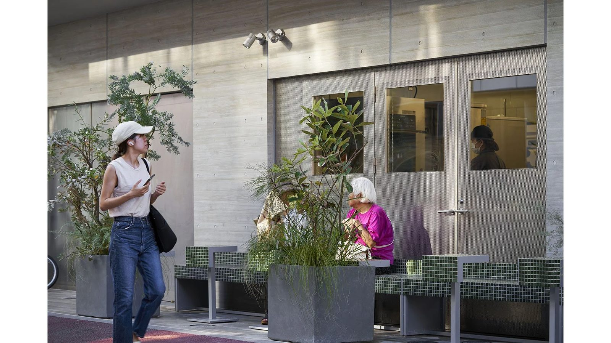
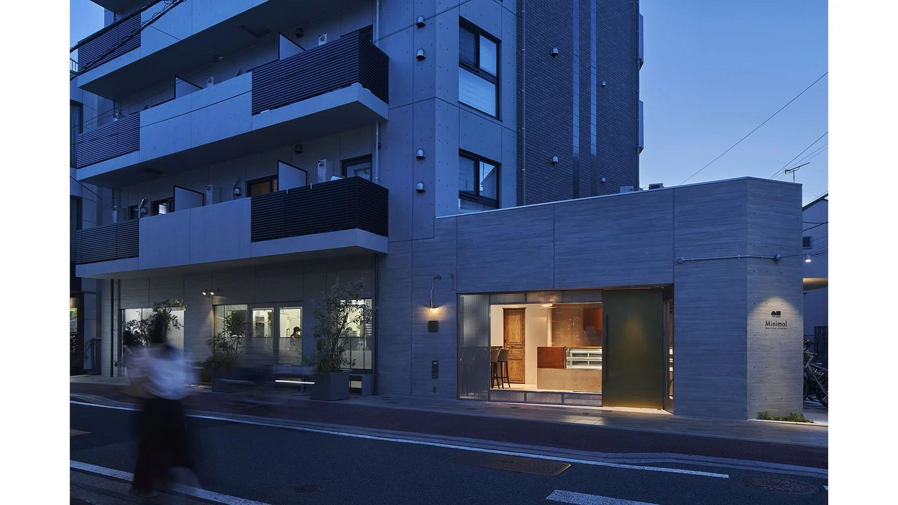
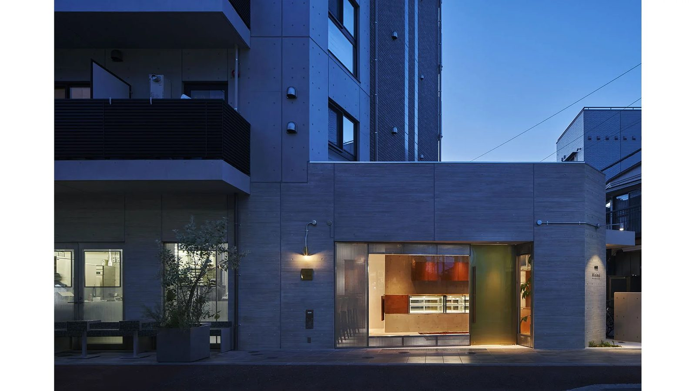
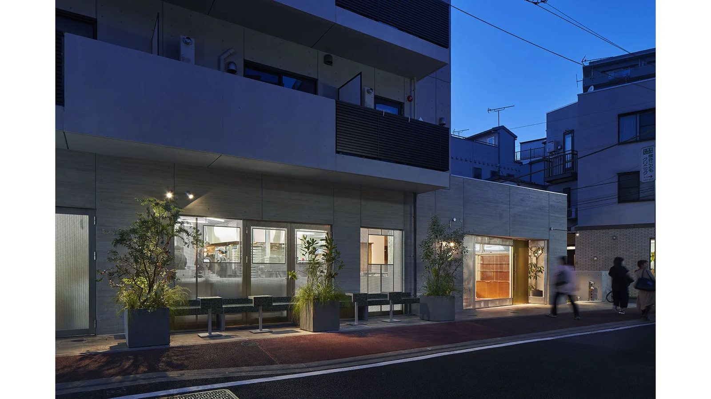
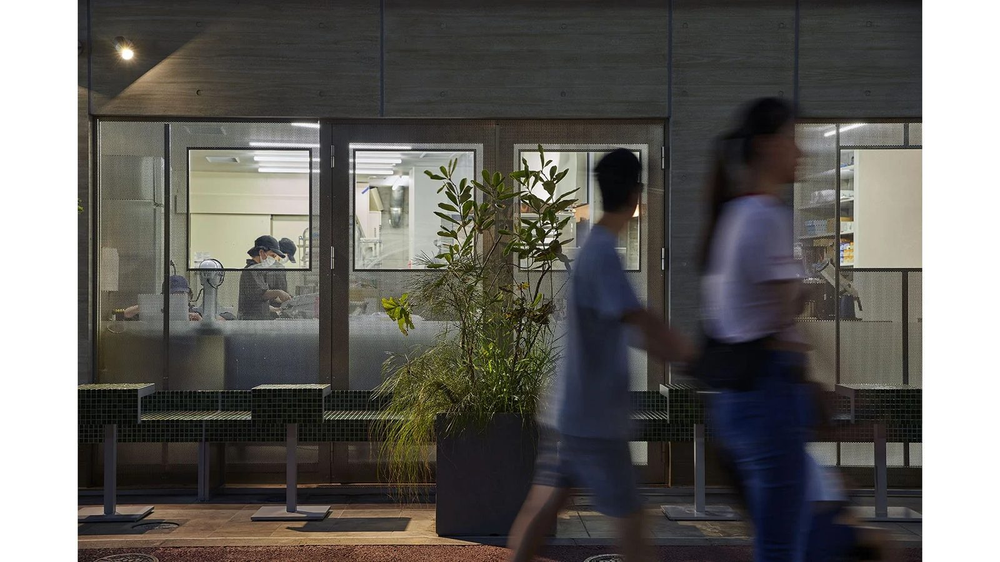